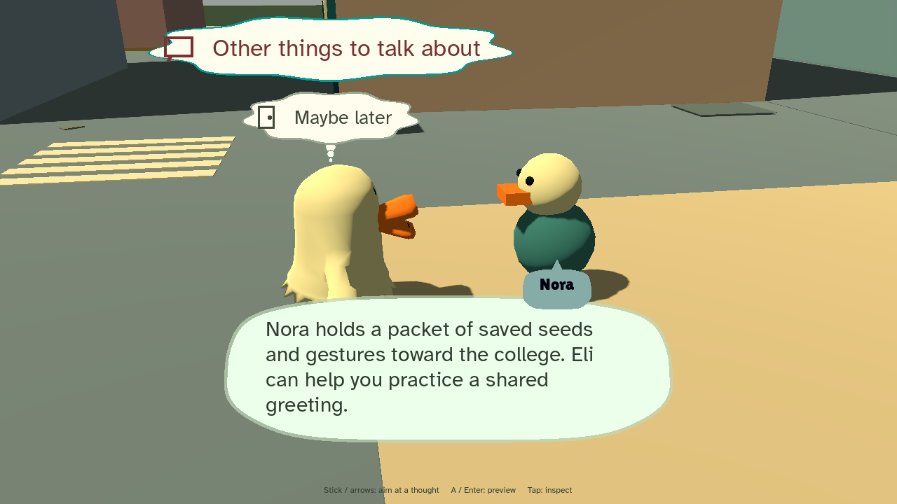

Mr. Duck Goes
to College
A whole city to cross, a campus to find, and neighbors with a lot to say.
Walk or skate from the apartments through downtown and up the greenway to campus. Learn a greeting from Eli, help Nora get her saved seeds to the college, and hear what the neighbors think of the potholes. This early demo is ready for you to mess with.
Play the beta →No installation or account needed. Desktop browser recommended. Allow a moment for the first load.

Get moving
- Move
- WASD / arrows · left stick
- Look
- Right mouse drag / IJKL · right stick
- Jump
- Space · A
- Ask / inspect
- E · X
- Board
- Q / Alt · View / Select
- Push faster
- B · B
- Pockets
- Tab
- Pause
- Escape / P · Start
- Debug info
- F3
Click inside the game to focus it and enable sound. If using a controller, press a button after connecting it.
A few things to try
Follow the objective at the top right: Eli is in the campus admin court, Nora is on the downtown Common Ground plaza. Choices float as thought clouds; each one shows its time cost before anything happens. There is no deadline.
Talk to the neighbors on the sidewalks. Most have a complaint about the city before their tip. Rosa waits at the downtown bus stop and speaks Spanish; try her before and after Eli's greeting. Skating, jumps and tricks still use simple placeholder poses.
Sprint or push hard and a stamina wheel appears beside Mr. Duck. It drains as you go and fades once it refills; the gold dots under it are your fitness level. The screen otherwise stays clear: the clock, your objective and a prompt when there is something to do. Press F3 (or use Pause) for the old debug readouts.
Menus: A selects, B goes back, and left/right adjusts sliders. Your discoveries and settings save in this browser; private browsing or clearing site data may reset them.
Tell us what you notice
Something confusing, broken, or fun? Include your browser, controls, what you tried, and what happened.
Report a playtest finding on GitHub · Download a feedback template